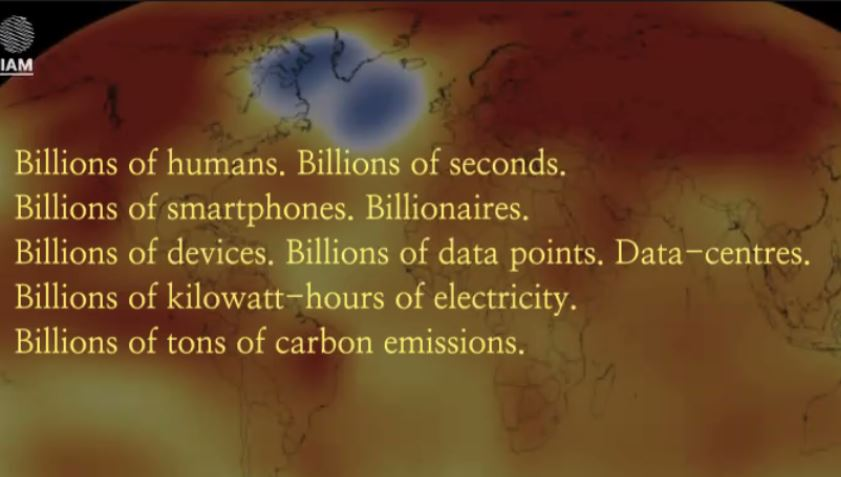

Term2: Designing for The Next Billion Seconds
10.01.2022
Introduction
After the Winter holiday, it was refreshing to begin the sec ond trimester with a seminar that allows us to learn to remember the Future, although it was held online, it was very thought provoking in understanding where I am in the world unpacking big questions like what is time, and what is the size of a billion. Although our Masters is titled Design for Emergent Futures, this was the first time I found my self questioning what the future means. The beginning of this seminar helped us start with i deas in understanding linear time and questioning what the existential technological thinking, using critical planetarium thinking exercises. Andres from IAM welcomed us to use futures and speculations as design tools, exploring socio-ecological technologies that influence the economy, tackling environmental justice as a social layer.
In Randomness we trust: Questioning as a Design Tool
After the Winter holiday, it was refreshing to begin the sec ond trimester with a seminar that allows us to learn to remember the Future, although it was held online, it was very thought provoking in understanding where I am in the world unpacking big questions like what is time, and what is the size of a billion. Although our Masters is titled Design for Emergent Futures, this was the first time I found my self questioning what the future means. The beginning of this seminar helped us start with i deas in understanding linear time and questioning what the existential technological thinking, using critical planetarium thinking exercises. Andres from IAM welcomed us to use futures and speculations as design tools, exploring socio-ecological technologies that influence the economy, tackling environmental justice as a social layer.
How can it all change?
Design for Humbleness- think holistically, we cannot save the planet but we can care. Humans are a small part of a huge cosmic body -Designing for responsibility- Think of ourselves of interdependent beings, but beings with rights and responsibilities. Audrey Laud , Designing for empathy - Designing for solidarity instead of charity, where instead of horizontal up down , rather at the same level. Designing for values.
A day in my life 1 billion seconds from now
Ruben and I teamed up for a task to envision how a day in our lives would look like in the 2050s. We opted for a dystopian / utopian approach, speculating how a typical day would look like in terms of news, transport, career , eating breakfast, socialising, online shopping and recreational activities. Our presentation can be accessed here:

What is the Future?
I understand it in 2 fold: a way of understanding and navigating space and time as humans ,making meaning of existential ideas. Also as a matrix of possibilities, from actions and choices. In this sense we can see design as a choice and an action to add into the body of the possible futures.
What is Everything?
Plural cosmologies - everything is physical bodies and abstract objects, it is without limits and refers to anything. Everything includes perceptions. The everything manifesto is about designing for systemic change and not solutions,
How Big is a Billion
Digitalisiation comes from our hands, using our fingers to count. But how big is a billion? ( one million million) - depending on the political dimensions, understanding that numbers are a technology as well, we use them in the process of making decisions. How much? Different context will give different meanings to the phrase a billion ( depends who is looking and the dimensions taken into account) In coming to terms how big a billion is, we continued the conversation to how extensive billionaires are, and how they are actually a malignant anomaly. But what about big data? I came to understand that data used in connections, patterns and algorithms designed in the interest of politics, perpetuates data extractions, usage of products, where the actual meaning and quantity of things is misleading. The meaning and semantics of matter is important.

Design is a TOOL.“Design is a a decision making practice. A verb.
The language of understanding and describing life , and framing a problem in a right way. Why do words matter? - Properly frame and see things in another perspective. Thinking of the digital economy, using active users. “
5G Mayor's assembly 1 Billion seconds from now.
We were tasked to design a city existing in a billion seconds from now. Our group chose Jakarta, as its a city likely to be sinking in the close future due to rising sea levels. The first task was to take into consideration the IPCC report, temperature and climate that our city would be functioning in. We decided the new city titled Jxkxrtx, will have city citizens located all over the world, where a sense of togetherness is propagated through the metaverse. Using the GPT3 AI text generator , we promoted responses for our non-human mayor in topics of migration, data governance, wealth concentration, nightlife and water.
Main points from the seminar:
Everything includes perceptions. The everything manifesto is about designing for systemic change and not solutions. Different context will give different meanings ( depends who is looking and the dimensions taken into account) Why do words matter? - Properly frame and see things in another perspective. Design in the long term Design for Humbleness- think holistically, we cannot save the planet but we can care. Humans are a small part of a huge cosmic body.